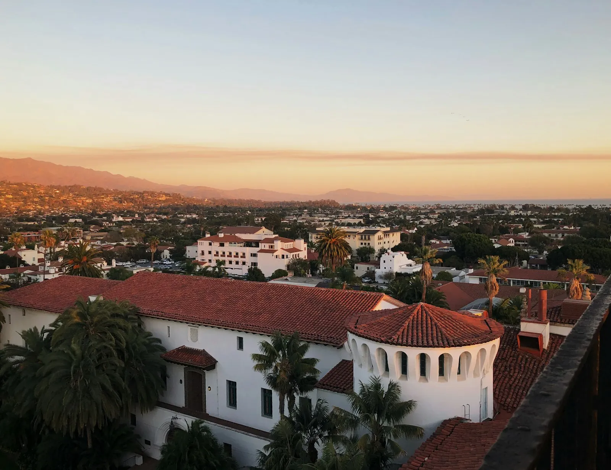

Santa Barbara: Spanish Coast, Wine & Relaxed Luxury
· By GoldenPath Guide Editorial Team
Bougainvillea climbs warm red-tile roofs while birdsong and sea breezes fill the air. That’s why people call Santa Barbara the American Riviera. About 90 miles north of Los Angeles, next to the tony enclave of Montecito that celebrities call home, the city keeps the charm of its 150-year-old downtown along with bluffs overlooking the Pacific. In the morning the water sits flat and grey under a milky sky until the sun burns the haze off by mid-day.
What surprises many visitors is how much of it you can enjoy with no car at all.
An Easy City, Minus the Car
Trains serve the city comfortably, East Beach is a fine family spot for a beach day, and the pedestrian State Street downtown plus e-bikes make getting around a breeze. Rent beach sports gear on the shore, or walk the popular bluff-top trails with dramatic views with dramatic views of the Channel Islands National Park bluffs across the water.
Stearns Wharf & the Whale Migration
Start at Stearns Wharf, Santa Barbara’s icon. Eating or strolling atop this wooden pier with the sea stretched out is lovely, but what makes it special is what swims beneath. In 2023 the Santa Barbara Channel was recognized as only the second whale heritage site in the U.S. From November to April, thousands of gray whales pass through on their way to Mexico; in spring the whales return north, filling the water. Whale-watching tours run daily in season. Out on the water, the deck rolls gently and the wind carries a cold salt tang as a spout breaks the surface off the bow.
Art lovers should swing by the Funk Zone. Buzzing with hip restaurants and bars, it’s also home to MOXI, an interactive science and art museum that lights up kids’ eyes. On the first Sunday of each month, El Presidio hosts a market with more than 50 women-owned vendors.
The Spanish Old Town & a Food Crawl
Cross the 101 and Spanish architecture catches your eye. The Old Mission Santa Barbara is the landmark, pairing red tile and cloisters in classic romantic style. Downtown holds the Lobero Theatre, often named one of the most beautiful theaters in the world. On weekends, stock up at the farmer’s market, then pick up local sides at the Santa Barbara Public Market for a picnic.
A Pacific smile on the Central Coast, Spanish lanes, whale routes and fine food fill a day here with no regrets. It works just as well as a day trip from Los Angeles as a healing weekend away. Late in the day, the red tiles on State Street go amber and the bougainvillea blows soft in the sea breeze.
Wine Tasting in the Funk Zone and Urban Wine Trail
Santa Barbara's Urban Wine Trail packs 30-plus tasting rooms into the beachside Funk Zone, walkable in an afternoon. Standard flights run $25 to $40 for five to six pours, with the fee commonly waived on a two-bottle purchase; reserve Friday-through-Sunday visits a day ahead, since the popular rooms cap capacity. The Funk Zone's rooms pour Santa Barbara County labels — Pinot Noir, Chardonnay and Syrah dominate — while the Presidio neighborhood rooms skew natural and small-lot. Weekday tasting traffic runs half of weekends, and several rooms offer industry or local discounts on Tuesdays. The Santa Barbara Wine Festival each spring ($75 to $100) samples 50-plus producers in one afternoon at the museum grounds. Designate a walker: the whole trail spans under a mile. Skip the limo-party rooms at peak Saturday hours — the same wines pour quietly on Thursday.
Channel Islands Day Trips and Kayaking
Island Packers runs the Channel Islands boats from Ventura Harbor, 30 miles south — the Santa Cruz Island day trip takes an hour each way at about $65 to $75 round-trip, with two to four sailings daily in summer. Book two to four weeks ahead; July and August crossings sell out. The guided sea-cave kayak tours ($150 to $180 including the ferry) paddle painted caves and kelp forests with naturalist guides — the morning departures run calmest. Hikers take the Potato Harbor trail (5 miles round-trip) for the arch viewpoint; bring all water and food, since the islands have no services. Gray whales pass December through April visible from the crossing; blue whales appear June through September. The Ventura harbor lots charge $10 to $15 a day. Seasickness strikes the channel crossing regularly — take preventative tablets an hour before boarding and sit mid-boat.
Where to Stay and Parking Downtown
State Street divides the lodging map. Beachfront hotels along Cabrillo Boulevard run $350 to $550 in summer with direct sand access; the inns and motels along upper State Street run $150 to $250 with free parking and a 10-minute walk to the water. Downtown parking structures offer the first 75 minutes free, then $2-plus per hour — the beach lots charge $3-plus per hour and fill by 11 a.m. on summer weekends. The MTD waterfront shuttle runs 50 cents along the beach-State Street loop, and most downtown hotels include free shuttle passes. Book summer stays 6 to 8 weeks out; winter rates drop 25 to 35 percent with the same ocean views. Dinner on State Street runs $25 to $45 per person; the Funk Zone's wine-and-small-plate rooms feed two for $40 to $60. The Sunday arts-and-crafts show along Cabrillo Boulevard runs year-round and costs nothing to browse.